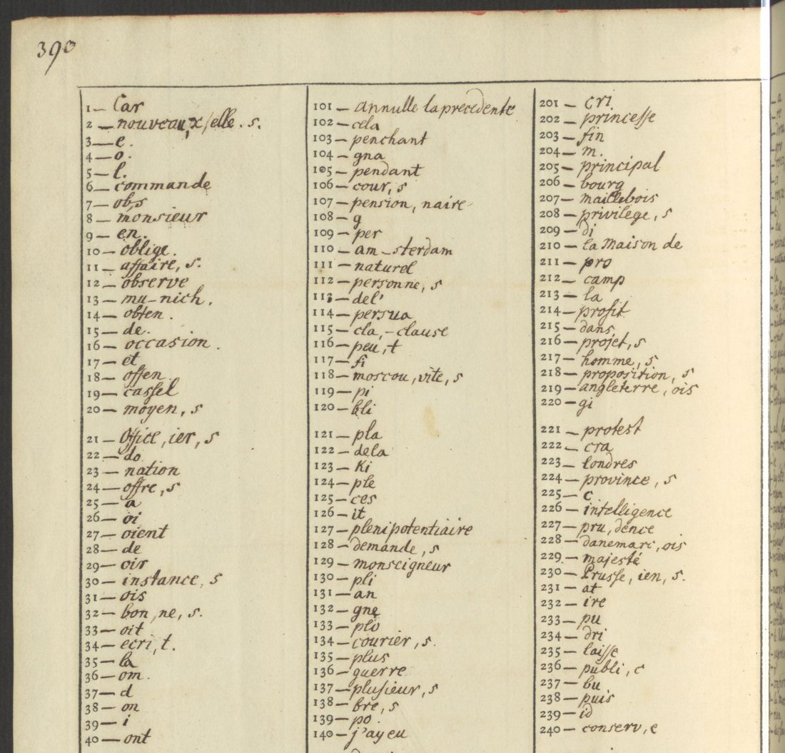
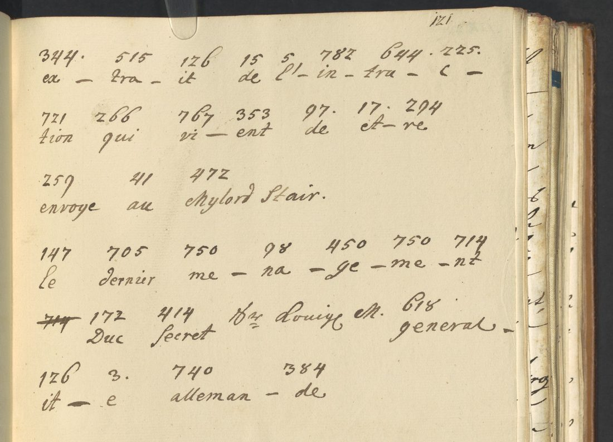

At a glanceExternal key matched · complete
- The letters
- An unsigned letter dated London, 15/26 February 1743, and Ernst von Steinberg’s letter from London of 29 March / 9 April 1743, both to Lieutenant-General Johann Georg von Ilten with the Hanoverian troops. The letters are in German, with the secret parts in French code.
- Where
- Gottfried Wilhelm Leibniz Bibliothek, Hanover, Ms XXIII 1234:29,2 pp. 73–75 and 119–121, online in the GWLB digital library. Kalliope calls both “teilweise dechiffriert”.
- The cipher
- A syllabic nomenclator of 863 numbered groups, with homophones, officers’ names, and the control groups “annulle la precedente” and “repete la precedente”. Blank numbers are nulls.
- How it was deciphered
- The key table is in another volume of the papers, Ms XXIII 1234:31,1 pp. 386–391 (1745/46). It matches the worksheet the office made for the Steinberg letter, and it reads the unsigned letter, which had no decipherment at all.
- What it says
- The King approves the forage instructions, and the troops are to eat the country bare so that the French find “ni fourage ni rien”. Steinberg encloses an extract of the instructions just sent to Lord Stair.
- Still open
- One group whose last digit is lost in the binding, and a stray letter before and after it.

01 The letters
Johann Georg von Ilten (1688–1749) was a Hanoverian lieutenant-general in the Pragmatic Army, which George II had sent to the Austrian Netherlands. His papers, the Sammlunge von Krieges Commissariat undt Landt-Sachen, are Ms XXIII 1234 in the Ilten collection at the GWLB. Kalliope catalogues two letters in volume 29,2 singly, each as “teilweise dechiffrierter Brief”.
- Unsigned, London, 15/26 February 1743 (pp. 73–75). A German opening says the report of 18 February has arrived and been approved. Twenty-five lines of code follow, 189 groups, and then more German clear text about an affair between Colonel von Hardenberg and a major. Nobody deciphered the code. Kalliope’s “partly deciphered” can only mean the clear parts.
- Ernst von Steinberg, London, 29 March / 9 April 1743 (pp. 119–121). A German letter with three short code runs, 34 groups. Page 121 is the office’s worksheet, with each group glossed syllable by syllable.
02 The key
A Kalliope search for “Chiffre” in the Ilten papers finds volume 31,1 (1745–46), whose record lists “eine Chiffre-Tabelle” at pp. 386–391. The key is two-part:
- pp. 386–388: the enciphering side, in alphabetical order (“a – 25, 61, 244, 301, 467, 720”), with an Additamentum of officers and places, among them Ilten himself as 845.
- pp. 390–391: the deciphering side, numbers 1–863. Its foot note reads “NB. les Chiffres qui restent ne signifient rien”: blanks and everything from 864 to 1000 are nulls. Groups 101 and 783 mean “annulle la precedente” and 453 “repete la precedente”.

The table was transcribed in full, 863 entries. The Steinberg worksheet confirms it: every value the office wrote there, 28 of them, is the table’s value. The worksheet has 17 “et” and 294 “re” for être, 472 “Mylord Stair” and 414 “secret”. The table is dated by its volume to 1745/46, but its names (Sommerfeldt, Du Pontpietin, Stair, the Duc d’Arenberg) are the names of 1743.

03 The reading
The unsigned letter, 15/26 February 1743
Pour ce qui regarde les instructions que Monsieur le general du Pontpietin a donné à Monsieur le Lieutenant general de Sommerfeldt par rapport aux fourages, elles sont aussi approuvées, ainsi que j’ay ordre de le marquer, aussi bien qu’on ne doutoit point du soin qu’on auroit de continuer à tenir toujours une bonne et exacte discipline dans ce pays là. Cependant on souhaite que les trouppes consument avec […] même bonne discipline ce qu’il y a de fourage dans ces quartiers, afin qu’il n’en reste rien si l’envie prenoit aux François de vouloir prendre quartier après vous dans ce pays là, de sorte qu’ils n’y trouveroient point ni fourage ni rien de ce qui seroit necessaire pour la subsistance des trouppes. Vous ferez usage de ce dernier point selon votre prudence ordinaire.
In English: the King approves the forage instructions that General du Pontpietin gave Lieutenant-General Sommerfeldt, and trusts that good discipline will be kept. The troops are nevertheless to consume the forage in their quarters, so that if the French should quarter there after them they find neither forage nor anything else to keep an army. Ilten is to use this last point with his usual prudence. The letter is unsigned, but it writes “j’ay ordre de le marquer” and dates itself from London in the code Steinberg used five weeks later, so it probably came from the German Chancery in London. That is not proven.
Two control groups are used. 453 (“repete la precedente”) follows trouppes, and 101 (“annulle la precedente”) cancels a mistaken 697 empeche at the end.
Steinberg, 29 March / 9 April 1743
Auf Sr. Königl. Mayt. gnädigsten Befehl habe ich nicht nur das heute an den Herrn General du Pontpietin ergehende Königl. Rescriptum… hiebey zu schließen, sondern auch einen extrait de l’instruction qui vient d’être envoyée au Mylord Stair zur Nachricht… mit anzufügen, damit Ew. Hochwollgebohren quoique avec le dernier ménagement du secret bey Sr. Königl. Mayt. généralité allemande Gebrauch davon machen mögen.
With the table, all 34 groups read. The worksheet had skipped 278.613 quoique avec and misread 644.
In both letters the table’s 172 “Duc” stands for du: “le general Du Pontpietin”, “du soin”, “du secret”.
04 What remains open
- Unsigned letter, p. 74, line 3: “consument avec 283.75? même”. The last digit of 75? is inside the binding. 751, a null, fits the visible stroke, but 283 (r) then stands alone. The sense, “avec la même”, is plain.
- The same letter, p. 74, line 4: a single 59 (e) after discipline, probably a slip.
- Volume 29,2 is described as partly in cipher throughout. Only these two letters are catalogued singly, so other coded passages in the 1741–46 volumes would read with the same table.
Full texts
The transcription and the decryption of every document on this page, so that the reading can be used and checked. Short files are shown here; all are in the repository.
Unsigned letter from London, 15/26 Feb 1743 (pp. 73-75)
Unsigned letter from London to Johann Georg von Ilten, Hanoverian lieutenant-general with the Pragmatic Army. The French cipher passage approves Du Pontpietin's instructions to Lieutenant-General Sommerfeldt about forage and asks that the troops eat up the forage in their quarters so the French find nothing if they quarter there after them.
Transcription
# Unknown sender -> Johann Georg von Ilten, "866.223 den 15/26 Febr 1743" # GWLB Ms XXIII 1234:29,2, pp. 73-75 (images: DE-611-BF-85387, phys 0081-0083) # Transcribed 24 Sept 2026 from the GWLB master images. '?' = digit hidden in the gutter; end digits read from the gutter crop (51, 407, 59, 95, 70, 705); 75? unresolved, most likely 751 (a null). # dateline: 866.223 # p.73 (after 6 lines of German clear text) 157 632 294 571 407 782 644 225 721 380 8 147 618 172 823 25 445 61 8 434 744 618 97 805 77 286 148 41 858 366 287 457 507 184 439 442 211 565 617 682 689 391 790 49 323 195 425 283 455 439 707 280 794 242 33 143 172 451 280 41 350 28 65 719 686 479 244 698 511 771 32 # p.74 17 344 648 704 209 368 306 130 51 215 56 66 70 346 38 463 671 407 639 65 490 750 714 613 283 75? 750 32 209 370 306 130 794 59 317 792 467 458 858 215 125 253 370 381 788 95 9 299 476 339 439 5 72 767 3 168 446 126 455 695 176 574 475 283 168 95 314 253 197 574 215 290 66 70 421 459 677 269 95 792 641 347 143 83 858 83 339 458 632 402 350 545 157 760 495 476 95 56 276 639 453 574 735 479 682 565 382 450 15 290 705 143 417 572 227 48 697 101 # then German clear text: "ein Affaire ... zwischen dem Obrist von Hardenberg und dem Major d..." continuing on p.75
Decryption
# ilten1743: readings
Key: the numbered table in the Ilten papers, GWLB Ms XXIII 1234:31,1, pp. 390-391 (decoding side, 1-863;
"NB. les Chiffres qui restent ne signifient rien": blank numbers and 864-1000 are nulls), with the
alphabetical encoding side on pp. 386-388. Transcribed in `key1743/`. Applied by `decode1743.py`;
sign-by-sign output in `decode_feb26_signs.txt` and `decode_mar29_signs.txt`.
## 1. Unsigned letter from London to Johann Georg von Ilten, 15/26 Feb 1743 (Ms XXIII 1234:29,2 pp. 73-75)
Dateline in cipher: `866.223` = [null] Londres.
German opening (clear): "Dasjenige was unterm 18ten February anhero berichtet worden, ist gestern zu recht
eingelauffen, und davon gebührender Vortrag geschehen; es dienet solches zur guten Nachricht, und ist durchgehends
approbirt worden." (Kurrent, read at word level.)
Cipher (189 groups), deciphered here with the key, French:
> Pour ce qui regarde les instructions que Monsieur le general Du Pontpietin a donné à Monsieur le Lieutenant
> general de Sommerfeldt par rapport aux fourages, elles sont aussi approuvées, ainsi que j'ay ordre de le marquer,
> aussi bien qu'on ne doutoit point du soin qu'on auroit de continuer à tenir toujours une bonne et exacte
> discipline dans ce pays là. Cependant on souhaite que les trouppes consument avec r[?] même bonne discipline [e]
> ce qu'il y a de fourage dans ces quartiers, afin qu'il n'en reste rien si l'envie prenoit aux François de vouloir
> prendre quartier après vous dans ce pays là, de sorte qu'ils n'y trouveroient point ni fourage ni rien de ce qui
> seroit necessaire pour la subsistance des trouppes [repeated]. Vous ferez usage de ce dernier point selon votre
> prudence ordinaire [empeche: annulled].
Translation: As for the instructions that General Du Pontpietin has given to Lieutenant-General Sommerfeldt about
forage, they are likewise approved, as I am ordered to tell you, and no one doubted the care that would be taken to
keep up good and exact discipline in that country. Still, it is wished that the troops, with the same good
discipline, consume what forage there is in those quarters, so that none is left if the French should take it into
their heads to quarter there after you, and they would find neither forage nor anything else needed to keep troops.
You will use this last point with your usual prudence.
Then clear German: "ein Affaire ... zwischen dem Obrist von Hardenberg und dem Major d..." (p. 74 foot, continuing on p. 75).
Notes on the groups:
- 172 is "Duc" in the table; here it stands for "du" twice ("le general Du Pontpietin", "du soin").
- 823 Pontpietin, 805 Sommerfeldt, 858 fourage are nomenclator names/words.
- 453 "repete la precedente" follows 639 (trouppes); 101 "annulle la precedente" cancels 697 (empeche).
- Gutter digits read from the full-resolution crop: 51 (ne), 407 (les), 59, 95 (n), 70 (la), 705 (dernier).
- Open: `283.75?` before `750` (me): 283 = r, and the third digit of 75? is lost in the binding (751, a null on
the sheet, fits the visible stroke). "avec r.. même" does not read as written; "avec la même" is the sense.
`59` (e) after "discipline" is superfluous. These three tokens are counted as not reading.
Measure: 189 cipher groups; 188 given a value (75? open); 186 read as sense (283, 75?, 59 not). 98.4%.
## 2. Ernst von Steinberg (London) to J. G. von Ilten, 29 Mar / 9 Apr 1743 (Ms XXIII 1234:29,2 pp. 119-121)
German letter with three cipher runs (34 groups). p. 121 is a contemporary worksheet glossing the groups.
"Auf Sr. Königl. Mayt. gnädigsten Befehl habe ich nicht nur das heute an den Herrn General du Pontpietin
ergehende Königl. Rescriptum Copeylich hiebey zu schließen, sondern auch einen [extrait de l'instruction qui vient
d'être envoyée au Mylord Stair] zur Nachricht, und zu dem Ende mit anzufügen, damit Ew. Hochwollgebohren
[quoique avec le dernier ménagement du secret] bey Sr. Königl. Mayt. [généralité allemande] Gebrauch davon machen
mögen."
- Run 1: 344 ex, 515 tra, 126 it, 15 de, 5 l', 782 in(s), 644 tru, 225 c, 721 tion, 266 qui, 767 vi, 353 ent,
97 de, 17 et, 294 re, 259 envoyé, 41 au, 472 Mylord Stair.
- Run 2: 278 quoique, 613 avec, 147 le, 705 dernier, 750 me, 98 na, 450 ge, 750 me, 714 nt, 172 du[c], 414 secret.
- Run 3: 618 general, 126 it, 3 e, 740 alleman(de), 384 de → "généralité allemande".
The contemporary worksheet (p. 121) read 644 as "tra" ("in-tra-c-tion"), left out 278.613 (quoique avec), and wrote
172 as "Duc"; it has 17.294 as "ê-tre". With the key the three runs read in full.Decryption
# Unknown sender -> Johann Georg von Ilten, "866.223 den 15/26 Febr 1743"
# GWLB Ms XXIII 1234:29,2, pp. 73-75 (images: DE-611-BF-85387, phys 0081-0083)
# Transcribed 24 Sept 2026 from the GWLB master images. '?' = digit hidden in the gutter; end digits read from the gutter crop (51, 407, 59, 95, 70, 705); 75? unresolved, most likely 751 (a null).
# dateline: 866.223
# p.73 (after 6 lines of German clear text)
157.632.294.571.407.782.644.
pour | ce qui | re | gard, e | les | in, s | tru
225.721.380.8.147.618.172.823.
c | tion, s | que | monsieur | le | general, aux | Duc | pontpietin
25.445.61.8.434.744.618.97.
a | donne | a | monsieur | le | Lieutenant | general, aux | de
805.77.286.148.41.858.366.
Sommerfeldt | par | ra | port | au, x | fourage | s
287.457.507.184.439.442.211.
el, le, s | son | t | au, x | si | ap | pro
565.617.682.689.391.790.49.
u | ve | es, se | ainsi | que | j'ay | ordre, s
323.195.425.283.455.439.
de | le | marque, s | r | au, x | si
707.280.794.242.33.143.
bien | qu'on | ne | doute, s | oit | point
172.451.280.41.350.28.65.719.
Duc | soi - soin, s | qu'on | au, x | roit | de | con | ti
686.479.244.698.511.771.32.
nu | er, s | a | tenir | toujours | un, e | bon, ne, s
# p.74
17.344.648.704.209.368.306.130.51
et | ex-excellence | ac | te | di | s | ci | pli | ne
215.56.66.70.346.38.463.671.407
dans | ce | pa, is | la | cependant | on | souhaite | que | les
639.65.490.750.714.613.283.75?
trouppe, s | con | su | me | nt | avec | r | <75?>
750.32.209.370.306.130.794.59
me | bon, ne, s | di | s | ci | pli | ne | e
317.792.467.458.858.215.125.
ce qu'il, s | y | a | de | fourage | dans | ces
253.370.381.788.95.9.299.476.
quartier | s | afinque | il, s | n | en | re | ste
339.439.5.72.767.3.168.446.126.
rien | si | l | en | vi | e | pre, s | no | it
455.695.176.574.475.283.168.95
au, x | france, ois | de | vou, s | loi, t | r | pre, s | n
314.253.197.574.215.290.66.70
dre-dresden | quartier | apre, s | vou, s | dans | ce | pa, is | la
421.459.677.269.95.792.641.
de | fort | e | qu'il, s | n | y | trouve
347.143.83.858.83.339.458.632.
roient | point | ni | fourage | ni | rien | de | ce qui
402.350.545.157.760.495.476.
se | roit | necessaire, ité | pour | la | subsi | ste
95.56.276.639.453.574.735.
n | ce | des | trouppe, s | repete la precedente | vou, s | f
479.682.565.382.450.15.290.705
er, s | es, se | u | sa | ge | de | ce | dernier, e, s
143.417.572.227.48.697.101.
point | selon | votre | pru, dence | ordinaire, s | empeche | annulle la precedente
# then German clear text: "ein Affaire ... zwischen dem Obrist von Hardenberg und dem Major d..." continuing on p.75Reading
<!-- Reading of the cipher of the unsigned letter from London, 15/26 Feb 1743 (GWLB Ms XXIII 1234:29,2 pp. 73-75), the French run of 189 groups as deciphered in reading.md section 1 with the key of Ms XXIII 1234:31,1 (decode_feb26_signs.txt), written out alone so that it is scored without the German clear text, translation and notes (verification 5, 23 Oct 2026). Two editorial marks of reading.md are left out of the text: after "trouppes" (the last) group 453 "repete la precedente" repeats the word; at the end group 101 "annulle la precedente" cancels 697 "empeche". r[?] and [e] as in reading.md. --> # Unsigned letter from London to J. G. von Ilten, 15/26 Feb 1743: the cipher ## Reading Pour ce qui regarde les instructions que Monsieur le general Du Pontpietin a donné à Monsieur le Lieutenant general de Sommerfeldt par rapport aux fourages, elles sont aussi approuvées, ainsi que j'ay ordre de le marquer, aussi bien qu'on ne doutoit point du soin qu'on auroit de continuer à tenir toujours une bonne et exacte discipline dans ce pays là. Cependant on souhaite que les trouppes consument avec r[?] même bonne discipline [e] ce qu'il y a de fourage dans ces quartiers, afin qu'il n'en reste rien si l'envie prenoit aux François de vouloir prendre quartier après vous dans ce pays là, de sorte qu'ils n'y trouveroient point ni fourage ni rien de ce qui seroit necessaire pour la subsistance des trouppes. Vous ferez usage de ce dernier point selon votre prudence ordinaire.
Translation
<!-- English translation (Claude Opus 5.5, 23 Oct 2026) of feb26_reading.md, the deciphered French run (189 groups) of the unsigned letter from London, 15/26 Feb 1743. Same holes: r[?] an uncertain group (left untranslated), [e] a letter supplied. --> # Unsigned letter from London to J. G. von Ilten, 15/26 Feb 1743: the cipher, English translation ## Translation As regards the instructions which Monsieur the General Du Pontpietin has given to Monsieur the Lieutenant-General von Sommerfeldt with regard to forage, they too are approved, as I have orders to state, just as there was no doubt of the care that would be taken to continue always to keep good and exact discipline in that country. Nevertheless it is wished that the troops consume, with r[?] the same good discipline, what forage there is in those quarters, so that nothing of it remains if the French should take a fancy to take up quarters there after you in that country, so that they would find there neither forage nor anything of what would be necessary for the subsistence of the troops. You will make use of this last point according to your usual prudence.
Ernst von Steinberg, London, 29 Mar / 9 Apr 1743 (pp. 119-121)
German letter from Ernst von Steinberg to Ilten with three code runs: it encloses an extract of the instruction just sent to Lord Stair, to be used with the utmost secrecy among His Majesty's German generals. A contemporary worksheet (p. 121) glosses the groups, partly wrongly.
Transcription
# Ernst von Steinberg -> Johann Georg von Ilten, London 29 Mar / 9 Apr 1743 # GWLB Ms XXIII 1234:29,2, pp. 119-121 (images DE-611-BF-85387, phys 0127-0129). German clear text with three cipher runs; # p. 121 is a contemporary worksheet glossing the groups syllable by syllable. # "... sondern auch einen [run 1] zur Nachricht, und zu dem Ende mit anzufügen, damit Ew. Hochwollgebohren [run 2] bey Sr. Königl. Mayt [run 3] Gebrauch davon machen mögen." 344 515 126 15 5 782 644 225 721 266 767 353 97 17 294 259 41 472 278 613 147 705 750 98 450 750 714 172 414 618 126 3 740 384
Decryption
# ilten1743: readings
Key: the numbered table in the Ilten papers, GWLB Ms XXIII 1234:31,1, pp. 390-391 (decoding side, 1-863;
"NB. les Chiffres qui restent ne signifient rien": blank numbers and 864-1000 are nulls), with the
alphabetical encoding side on pp. 386-388. Transcribed in `key1743/`. Applied by `decode1743.py`;
sign-by-sign output in `decode_feb26_signs.txt` and `decode_mar29_signs.txt`.
## 1. Unsigned letter from London to Johann Georg von Ilten, 15/26 Feb 1743 (Ms XXIII 1234:29,2 pp. 73-75)
Dateline in cipher: `866.223` = [null] Londres.
German opening (clear): "Dasjenige was unterm 18ten February anhero berichtet worden, ist gestern zu recht
eingelauffen, und davon gebührender Vortrag geschehen; es dienet solches zur guten Nachricht, und ist durchgehends
approbirt worden." (Kurrent, read at word level.)
Cipher (189 groups), deciphered here with the key, French:
> Pour ce qui regarde les instructions que Monsieur le general Du Pontpietin a donné à Monsieur le Lieutenant
> general de Sommerfeldt par rapport aux fourages, elles sont aussi approuvées, ainsi que j'ay ordre de le marquer,
> aussi bien qu'on ne doutoit point du soin qu'on auroit de continuer à tenir toujours une bonne et exacte
> discipline dans ce pays là. Cependant on souhaite que les trouppes consument avec r[?] même bonne discipline [e]
> ce qu'il y a de fourage dans ces quartiers, afin qu'il n'en reste rien si l'envie prenoit aux François de vouloir
> prendre quartier après vous dans ce pays là, de sorte qu'ils n'y trouveroient point ni fourage ni rien de ce qui
> seroit necessaire pour la subsistance des trouppes [repeated]. Vous ferez usage de ce dernier point selon votre
> prudence ordinaire [empeche: annulled].
Translation: As for the instructions that General Du Pontpietin has given to Lieutenant-General Sommerfeldt about
forage, they are likewise approved, as I am ordered to tell you, and no one doubted the care that would be taken to
keep up good and exact discipline in that country. Still, it is wished that the troops, with the same good
discipline, consume what forage there is in those quarters, so that none is left if the French should take it into
their heads to quarter there after you, and they would find neither forage nor anything else needed to keep troops.
You will use this last point with your usual prudence.
Then clear German: "ein Affaire ... zwischen dem Obrist von Hardenberg und dem Major d..." (p. 74 foot, continuing on p. 75).
Notes on the groups:
- 172 is "Duc" in the table; here it stands for "du" twice ("le general Du Pontpietin", "du soin").
- 823 Pontpietin, 805 Sommerfeldt, 858 fourage are nomenclator names/words.
- 453 "repete la precedente" follows 639 (trouppes); 101 "annulle la precedente" cancels 697 (empeche).
- Gutter digits read from the full-resolution crop: 51 (ne), 407 (les), 59, 95 (n), 70 (la), 705 (dernier).
- Open: `283.75?` before `750` (me): 283 = r, and the third digit of 75? is lost in the binding (751, a null on
the sheet, fits the visible stroke). "avec r.. même" does not read as written; "avec la même" is the sense.
`59` (e) after "discipline" is superfluous. These three tokens are counted as not reading.
Measure: 189 cipher groups; 188 given a value (75? open); 186 read as sense (283, 75?, 59 not). 98.4%.
## 2. Ernst von Steinberg (London) to J. G. von Ilten, 29 Mar / 9 Apr 1743 (Ms XXIII 1234:29,2 pp. 119-121)
German letter with three cipher runs (34 groups). p. 121 is a contemporary worksheet glossing the groups.
"Auf Sr. Königl. Mayt. gnädigsten Befehl habe ich nicht nur das heute an den Herrn General du Pontpietin
ergehende Königl. Rescriptum Copeylich hiebey zu schließen, sondern auch einen [extrait de l'instruction qui vient
d'être envoyée au Mylord Stair] zur Nachricht, und zu dem Ende mit anzufügen, damit Ew. Hochwollgebohren
[quoique avec le dernier ménagement du secret] bey Sr. Königl. Mayt. [généralité allemande] Gebrauch davon machen
mögen."
- Run 1: 344 ex, 515 tra, 126 it, 15 de, 5 l', 782 in(s), 644 tru, 225 c, 721 tion, 266 qui, 767 vi, 353 ent,
97 de, 17 et, 294 re, 259 envoyé, 41 au, 472 Mylord Stair.
- Run 2: 278 quoique, 613 avec, 147 le, 705 dernier, 750 me, 98 na, 450 ge, 750 me, 714 nt, 172 du[c], 414 secret.
- Run 3: 618 general, 126 it, 3 e, 740 alleman(de), 384 de → "généralité allemande".
The contemporary worksheet (p. 121) read 644 as "tra" ("in-tra-c-tion"), left out 278.613 (quoique avec), and wrote
172 as "Duc"; it has 17.294 as "ê-tre". With the key the three runs read in full.Decryption
# Ernst von Steinberg -> Johann Georg von Ilten, London 29 Mar / 9 Apr 1743
# GWLB Ms XXIII 1234:29,2, pp. 119-121 (images DE-611-BF-85387, phys 0127-0129). German clear text with three cipher runs;
# p. 121 is a contemporary worksheet glossing the groups syllable by syllable.
# "... sondern auch einen [run 1] zur Nachricht, und zu dem Ende mit anzufügen, damit Ew. Hochwollgebohren [run 2] bey Sr. Königl. Mayt [run 3] Gebrauch davon machen mögen."
344.515.126.15.5.782.644.225.721.266.767.353.97.17.294.259.41.472.
ex-excellence | tra | it | de | l | in, s | tru | c | tion, s | qui | vi | ent, s | de | et | re | envoy, e | au, x | Sta. Mylord Stair
278.613.147.705.750.98.450.750.714.172.414.
quoique | avec | le | dernier, e, s | me | na | ge | me | nt | Duc | secret
618.126.3.740.384.
general, aux | it | e | alleman, d, s, gne | deReading
<!-- Reading of Ernst von Steinberg's letter of 29 Mar / 9 Apr 1743 (GWLB Ms XXIII 1234:29,2 pp. 119-121) from reading.md section 2 (verification 5, 23 Oct 2026): a German sentence in clear (in ⟨ ⟩) with three French cipher runs (34 groups), deciphered with the key and checked against the contemporary worksheet on p. 121. The cipher runs are phrases inside the German sentence, not sentences of their own; the reading is judged as one sentence. --> # Ernst von Steinberg (London) to J. G. von Ilten, 29 Mar / 9 Apr 1743 ## Reading ⟨Auf Sr. Königl. Mayt. gnädigsten Befehl habe ich nicht nur das heute an den Herrn General du Pontpietin ergehende Königl. Rescriptum Copeylich hiebey zu schließen, sondern auch einen⟩ extrait de l'instruction qui vient d'être envoyée au Mylord Stair ⟨zur Nachricht, und zu dem Ende mit anzufügen, damit Ew. Hochwollgebohren⟩ quoique avec le dernier ménagement du secret ⟨bey Sr. Königl. Mayt.⟩ généralité allemande ⟨Gebrauch davon machen mögen.⟩
Translation
<!-- English translation (Claude Opus 5.5, 23 Oct 2026) of mar29_reading.md: a German sentence in clear (in ⟨ ⟩) with three French cipher runs, deciphered with the key and checked against the contemporary worksheet. No holes. --> # Ernst von Steinberg (London) to J. G. von Ilten, 29 Mar / 9 Apr 1743: English translation ## Translation ⟨By His Royal Majesty's most gracious command I am not only to enclose herewith a copy of the Royal rescript going today to General du Pontpietin, but also to add, for information, an⟩ extract of the instruction which has just been sent to My Lord Stair, ⟨and to this end, that Your Excellency⟩, though with the utmost care for secrecy, ⟨may make use of it with His Royal Majesty's⟩ German generals.
05 Sources
- GWLB digital library, Ms XXIII 1234:29,2 (METS DE-611-BF-85387, images 81–83 and 127–129), and Ms XXIII 1234:31,1 (METS DE-611-BF-85391, images 410–417), digitale-sammlungen.gwlb.de, public domain.
- Kalliope records DE-611-HS-4136816, DE-611-HS-4136823 and DE-611-BF-85391 (the “Chiffre-Tabelle”).
The transcribed key, the ciphertext, the decoder and the profile are in targets/ilten1743/.